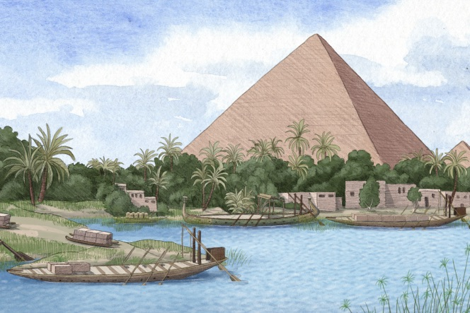

Les pyramides de Gizeh, histoire et conception
Commençons par le commencement, les pyramides de Gizeh se situent en Égypte, plus exactement sur la rive
gauche ouest du Nil à 8km du centre-ville de Gizeh. Un plateau nivelé par la main de l’homme, un carré
d’environ 1,7 km de côté. Grâce au carbone 14 contenu dans le prélèvement des fameuses pyramides, nous
estimons qu’elles datent d’entre 2490 et 2550 avant J-C.

Les trois plus grandes et plus célèbres des pyramides d’Égypte se nomment Khephren, Mykérinos et enfin
Khéops. Elles ont été construites respectivement sous le règne des pharaons Khéops, Khéphren et Mykérinos.
D’une remarquable symétrie, l’alignement des pyramides est situé sur le sommet d’un pli anticlinal d’axe
NE-SO, il n’y a aucun lien avec la constellation du grand chien comme souvent il est rapproché, même si l’on
aurait pu espérer une nouvelle prouesse de nos bâtisseurs égyptiens.
En parlant de bâtisseurs, les pyramides de Gizeh sont faites de pierres, sous forme de blocs pesés grâce à la
technologie actuelle : environ 2,5 tonnes pour les plus petits jusqu’à environ 14,5 tonnes.
Minés et confectionnés directement à la carrière située au milieu de ce plateau, ce qui facilitait la
confection de ces moments historiques.
Source :
Les deux théories sur la construction des pyramides

La théorie des extraterrestres
"La théorie du complot selon laquelle les pyramides de Gizeh auraient été construites par des extraterrestres
ou des civilisations antérieures à l'Égypte antique est l'une des plus courantes. Selon cette théorie, les
pyramides auraient été construites à l'aide de techniques et de technologies avancées qui n'étaient pas
disponibles à l'époque, comme des outils de coupe de pierre de précision ou des méthodes de levage lourdes.
Certains soutiennent que les pyramides auraient été utilisées à des fins extraterrestres, comme des relais
de communication ou des sites d'atterrissage pour des vaisseaux spatiaux.
Il est important de noter qu'il n'y a aucune preuve solide pour étayer cette théorie. Les archéologues et
les historiens de l'Égypte s'accordent pour dire que les pyramides ont été construites par les Égyptiens
anciens à l'aide de techniques architecturales et d'outils relativement simples pour l'époque. Il existe des
documents écrits, des inscriptions et des témoignages archéologiques qui attestent de cela, ainsi que des
études scientifiques qui ont étudié les techniques de construction utilisées. Il est important de noter que
ces théories du complot ne reposent sur aucune preuve scientifique, historique ou archéologique solide."
La théorie des Atlantes
"Les Atlantes, qui auraient peuplé cette cité mythique évoquée par Platon, seraient les bâtisseurs de la
fameuse pyramide, selon de nombreux commentateurs pseudo-scientifiques.
Selon Platon, "l'Atlantide, après avoir colonisé les rivages de l'Afrique du Nord et de l'Italie, aurait
entrepris la conquête de l'Egypte, de la Grèce et du reste du monde méditerranéen, Athènes seule restant
libre face à elle".
Ainsi, selon les partisans de cette hypothèse, les pyramides sont des vestiges de cette civilisation
mythique, qui a fondé la civilisation égyptienne. D'après eux, les Atlantes maîtrisaient la "géo-énergie" et
les pyramides formaient un réseau de "réceptacles d'énergie". La pyramide de Gizeh, elle, serait une
"capsule temporelle" construite par les Atlantes pour voyager dans le temps et indiquer aux hommes du futur
comment éviter de reproduire les erreurs commises par les générations plus anciennes."